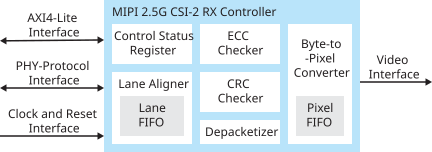

MIPI 2.5G CSI-2 RX Controller Core User Guide
The MIPI CSI-2 interface, which defines a simple, high-speed protocol, is the most widely used camera interface for mobile1. Adding a MIPI interface to an FPGA creates a powerful bridge to transmit or receive high-speed video data easily to/from an application processor. The MIPI 2.5G CSI-2 RX Controller core allows you to perform complex video and image processing as a part of a complete system solution with a data rate of up to 2.5 Gbps. The MIPI 2.5G CSI-2 RX Controller uses the hard MIPI D-PHY blocks in supported Titanium FPGAs.
Use the IP Manager to select IP, customize it, and generate files. The MIPI 2.5G CSI-2 RX Controller core has an interactive wizard to help you set parameters. The wizard also has options to create a testbench and/or example design targeting an Efinix® development board.
This help gives you an overview of the MIPI 2.5G CSI-2 RX Controller core and how to configure it with the IP Manager. For detailed information, refer to MIPI 2.5G CSI-2 RX Controller User Guide in the Support Center.
Features
- Configurable data lanes: 1, 2, or 4
- High-speed (HS) mode and Low-power (LP) mode
- Arbitrary number of payload data bytes
- HS mode byte clock frequency from 5 MHz up to 156 MHz (from 80 Mbps up to 2,500 Mbps data rate)2
- Continuous HS mode byte clock and discontinuous HS mode byte clock
- 16-bit HS mode data width
- Pixel format:
- RAW: RAW6, RAW7, RAW8, RAW10, RAW12, RAW14, RAW16, RAW20, RAW24, RAW28
- RGB: RGB444, RGB555, RGB565, RGB888
- YUV: YUV420 8-bit (legacy), YUV420 8-bit, YUV420 10-bit, YUV420 8-bit (CSPS), YUV420 10-bit (CSPS), YUV422 8-bit, YUV422 10-bit
- User defined 8-bit data types
- Generic 8-bit long packet
- Null, blank, and embedded 8-bit non-image data
- PPI interface
- Generic frame mode and accurate frame mode
- Supports end of transmission error, start of transmission sync error, control error & LP escape error
- Supports control status register (CSR) for status and error assertion accessed through AXI4-Lite interface
- Supports initial auto-skew calibration
Functional Description
- Control Status Registers—Registers that the users can configure in runtime and statuses that user can read using the AXI4-lite interface
- ECC Checker—Error correction code checker block
- CRC Checker—Cyclic redundancy checker block
- Depacketizer—Converts MIPI data to pixel data format
- Lane Aligner—Aligns data lanes to each other
- Lane FIFO—Manages clock domain conversion for the data from MIPI byte clock domain to pixel clock domain
- Byte-to-Pixel Converter—Converts the 64-bit data from the packetizer to pixel data format and rearranges the data according to video data type

IP Manager
The Efinity® IP Manager is an interactive wizard that helps you customize and generate Efinix® IP cores. The IP Manager performs validation checks on the parameters you set to ensure that your selections are valid. When you generate the IP core, you can optionally generate an example design targeting an Efinix development board and/or a testbench. This wizard is helpful in situations in which you use several IP cores, multiple instances of an IP core with different parameters, or the same IP core for different projects.
The IP Manager is included with the Efinity software v2020.2 and higher.
- IP Catalog—Provides a catalog of IP cores you can select. Open the IP Catalog using the toolbar button or using .
- IP Configuration—Wizard to customize IP core parameters, select IP core deliverables, review the IP core settings, and generate the custom variation.
- IP Editor—Helps you manage IP, add IP, and import IP into your project.
Generating the MIPI 2.5G CSI-2 RX Controller Core with the IP Manager
- Open the IP Catalog.
- Choose core and click Next. The IP Configuration wizard opens.
- Enter the module name in the Module Name box.Note: You cannot generate the core without a module name.
- Customize the IP core using the options shown in the wizard. For detailed information on the options, refer to the Customizing the MIPI 2.5G CSI-2 RX Controller section.
- (Optional) In the Deliverables tab, specify whether to generate an IP core example design targeting an Efinix® development board and/or testbench. These options are turned on by default.
- (Optional) In the Summary tab, review your selections.
- Click Generate to generate the IP core and other selected deliverables.
- In the Review configuration generation dialog box,
click Generate. The Console in the
Summary tab shows the generation status.Note: You can disable the Review configuration generation dialog box by turning off the Show Confirmation Box option in the wizard.
- When generation finishes, the wizard displays the Generation Success dialog box. Click OK to close the wizard.
The wizard adds the IP to your project and displays it under IP in the Project pane.
Generated Files
- <module name>_define.vh—Contains the customized parameters.
- <module name>_tmpl.v—Verilog HDL instantiation template.
- <module name>_tmpl.vhd—VHDL instantiation template.
- <module name>.v—IP source code.
- settings.json—Configuration file.
- <kit name>_devkit—Has generated RTL, example design, and Efinity® project targeting a specific development board.
- Testbench—Contains generated RTL and testbench files.
Instantiating the IP
- <module name>.v_tmpl.sv is the Verilog HDL module.
- <module name>.v_tmpl.vhd is the VHDL component declaration and instantiation template.

Customizing the MIPI 2.5G CSI-2 RX Controller
The core has parameters so you can customize its function. You set the parameters in the General tab of the core's IP Configuration window.
| Name | Options | Description |
|---|---|---|
| Data Lanes | 1, 2, 4 | Number of data lanes. Default: 4 |
| IP Core Clock Frequency | 40 - 100 | IP core clock frequency in MHz. Default: 100 |
| Pixel Data FIFO Depth Size | 256 - 8192 | FIFO depth size that stores the pixel packet data (set to power
of 2 value). Minimum FIFO depth required > horizontal_pixel
(HACT) x bits_per_pixel / 64 Default:
1024 |
| Image Frame Mode | Generic, Accurate | Selects image frame mode. Generic mode: Frame format without
accurate synchronization timing via Line Start and Line
End. Accurate mode: Frame format with accurate
synchronization timing via Line Start and Line
End. Default: Generic |
| Enable Extra Bit on Virtual Channel | Disable, Enable | Enables 16 virtual channel support. Default:
Disable |
| Enable Pipeline State for RXStopState Signal | 8 – 15 | Enable pipeline stage for RXStopState signal. The pipeline
registers are clocked with HS mode byte clock. Compensates the
MIPI HSIO deserializer, read FIFO and data synchronizer latency
in designs with low MIPI data rate. Default:
8 |
| Number of Asynchronous Register Stages | 2 – 8 | Cross clock domain control signal synchronization stage.
Default: 2 |
| tINIT_NS | Values according to MIPI D-PHY specifications. | PHY initialization period in ns. Value must be 400,000 or
more. Default: 400,000 |
| Pack Type 40 | Enable, Disable | Enables the controller to pack RAW10, RAW20, YUV_420_10, and
YUV_422_10 data type.3 Default: Enable |
| Pack Type 48 | Enable, Disable | Enables the controller to pack RAW6, RAW12, RAW24, RGB888, and
YUV_420_8_legacy data type.3 Default: Enable |
| Pack Type 56 | Enable, Disable | Enables the controller to pack RAW7 RAW14, and RAW28.3 Default: Enable |
| Pack Type 64 | Enable, Disable | Enables the controller to pack RAW8, RAW16, RGB444, RGB565,
RGB555, YUV_422_8, YUV_420_8, generic long packet, user define
8-bit, and embedded 8-bit non image packet.3 Default: Enable |
| PPI Interface Data Width | 16 | HS mode data width. Default: 16 |
| MIPI_CSI2_RX_DEBUG | Enable, Disable | Enables debug ports for internal signal observation and
monitoring. Default: Disable |
| MIPI_CSI2_RX_PIXEL_ SIDEBAND |
Enable, Disable | Enabels more sideband ports under pixel interface. Refer to
portlist for more details. Default: Disable |